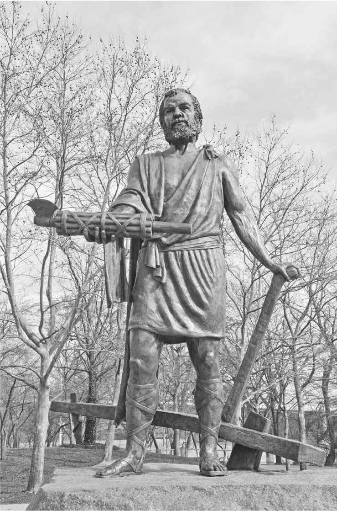
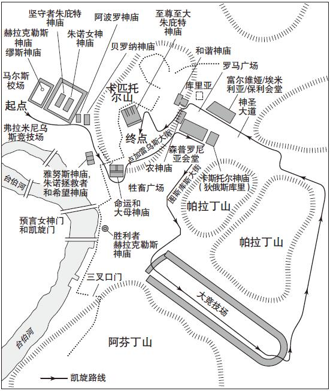
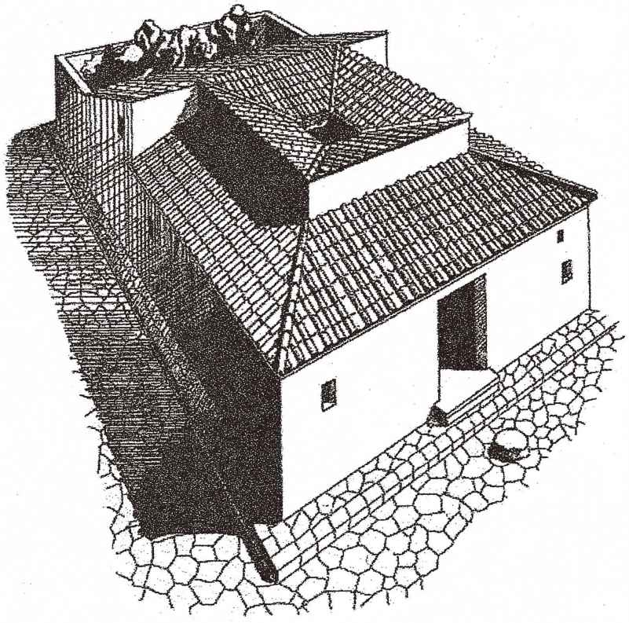
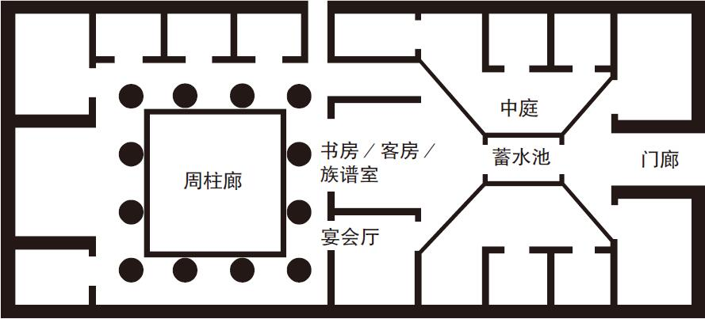
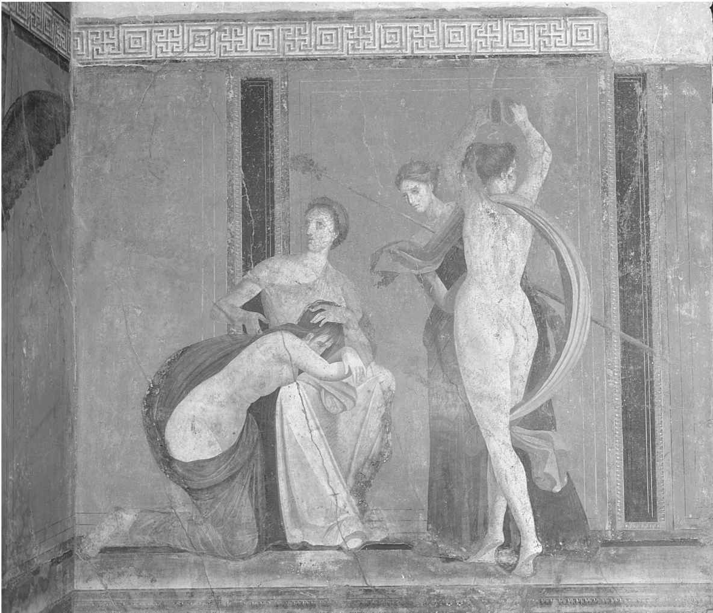

罗马共和国在历史上是一个真实存在的实体，一个复杂而有活力的世界，但与此同时又总能保持鲜明的罗马人特色。它的社会结构呈等级化的金字塔状，从位居顶端的元老院贵族到小农和手工业者，再到提供大量劳动力的众多奴隶。但这一结构绝不僵化，处于世袭精英阶层外的优秀人士总能够获得提升自身地位的渠道，这是罗马强大优势的体现之一。在日常生活中，最基本的单位是家庭。若非必然从实践层面而言，理论上的家庭由父权性质下的“父家长”（paterfamilias ）所支配。女人在家庭中起到的作用大多是从属性的，不过她们在罗马历史上的地位很难从主要由男性书写的文献资料中获得公正的评价。在罗马社会的所有层面，公私领域并非截然分开，而是通过共同的文化和宗教价值观粘合在一起，塑造了罗马人的自身认同。
早在公元前5世纪中叶，羽翼未丰的罗马共和国发现自身正处在意大利中部地区周边民族的进攻之下。形势十分危急，因此罗马任命了一名独裁官，即卢修斯·昆克提乌斯·辛辛那图斯。李维讲到了这个故事：
辛辛那图斯进入罗马城，接受了独裁官一职。他号召所有符合入伍年龄的男性公民带着武器集合起来，带队出征，打了一个漂亮的胜仗。在这之后，他返回罗马举行了凯旋式。被俘敌军将领走在他的战车前面，战车后则跟着他的士兵以及缴获的战利品。在这之后，辛辛那图斯卸任独裁官。他在任仅15天。
这个故事是真实的吗？其实这一点并不重要。卢修斯·昆克提乌斯·辛辛那图斯作为理想罗马人的典范而被人怀念。在他生活的年代，这个首屈一指的人物是个农民，用自己的双手在薄田里辛苦劳作。在和来自罗马元老院的使团接洽后，并在听取代表们的指示之前，他穿上托迦袍。同时，在接受他们的请求前，他擦干了手上的汗水。通过战场上的胜利，他获得了荣耀，举行了凯旋仪式。随后他放下权力，因为他对国家福祉的关心要大过个人荣誉。因此，辛辛那图斯展现出了罗马共和国日后迈向伟大所需要的一切个人品质。罗马人的早期历史中充满了这种英雄式的例子，比如卢克雷提娅的自殉激励了卢修斯·尤尼乌斯·布鲁图斯推翻王政。还有普布利乌斯·贺拉提乌斯·科克勒斯在台伯河的桥上死守以抵抗伊特鲁里亚国王拉尔斯·波尔西那。再如盖乌斯·法布里奇乌斯抵抗皮洛士进攻，但当他发现皮洛士的医生正打算向主人投毒之时，又提醒了这位国王。

图4 辛辛那提的辛辛那图斯雕像（现代作品）
通过这些故事，我们可以一窥罗马人是如何看待他们的祖先及其自身的。传统认为早期罗马正处在黄金时代，生活于其中的人们过着一种未被过量奢侈物腐蚀的简单生活。从这种有德行的生活中，他们获得了诸神的青睐，并在逆境中积蓄力量，从而令其超越周围其他民族。后世的罗马人学着模仿并超越他们的英雄祖先。正是这种模仿促使罗马共和国不断扩张，给罗马带来了前世所无法想象的财富。伴随着共和国在混乱和内战中坍塌，罗马人将这一结果归咎为道德的衰退和祖先品格的丧失，以此来解释自身的命运。
共和国早期那些最伟大的英雄人物多来自罗马社会的最上层，即元老院精英阶层。随着王制的灭亡，在罗马，能够跻身元老院成为一个人社会和政治地位的首要标志。那些最古老的门第，如尤利家族、费边家族、科尔涅利家族均将他们的血统上溯至国王时代甚至更远古的岁月，在共和国历史上形成了一种世袭显贵集团。但元老精英并非一个封闭的排他性群体，而是对新鲜血液保持开放。“阶层斗争”见证了富裕的平民获得与古老显贵同等的权利，在此后的几百年中，一些外来者也慢慢地获得了元老的地位。这些个人被称为“新人”，也就是一个家庭中第一个进入元老院或第一个达到执政官级别的人，其中包含了共和国历史上那些熠熠生辉的人物：老加图、盖乌斯·马略和马尔库斯·图利乌斯·西塞罗。
理论上，罗马元老院是一个由平等人组成的机构。但在精英集团内部，荣誉也是分等级的。当元老院开会辩论之时，首先发言的人是主持会议的两名执政官。随后的发言者依次是资历最深的前执政官、法务官和前法务官，直至资深元老中的最后一位。青年元老通常不会说话，而那些发言者又几乎总听从年长者的指挥。因此，元老院是个保守性质的团体，其中最年长者和资历最高者拥有强大的权力。元老院的领袖，也就是排在执政官后发言的那一位，叫“首席元老”，是元老院诸平等者之第一人。后来的奥古斯都采用了这一头衔，作为和罗马首位皇帝相匹配的一个称呼。
一个人在元老院中的身份和地位取决于他所拥有的“尊威”（dignitas ）。这是个较复杂的概念，它和英文单词dignity（尊严）在含义上有许多微妙的差别。尊威体现的是个人价值及其家庭价值的总和。那些曾担任过高级官职尤其是执政官的人，要比没有担任过这些官职的人拥有更多的尊威。那些名门之后继承更多的尊威，而个人的行为也能提升（或损坏）本人及其家庭的尊威。总之，一名男性提高尊威的最重要途径就是获取“荣耀”（gloria ）。在共和国时代的罗马，最高形式的荣耀是通过战争获得的，也就是通过率领军队获胜来赢取。每一名罗马贵族都会通过追求荣耀来增添尊威，进而超越元老等级化体系中的其他对手。
辛辛那图斯的故事就是元老们对这一理想渴慕以求的一个集中体现。当他被召唤来担任独裁官之时，辛辛那图斯就已获得了尊威，因为无人能对这一任命提出挑战。随后，通过战场上的胜利，他进一步获得了荣耀，这在元老院授予他举行凯旋式一事上得到认可。举行凯旋式是一名在战场上获胜的罗马将领能获得的最高形式的荣誉。将军率领胜利之师穿罗马城而游行，展示着那些在战争中缴获的俘虏和战利品。凯旋队伍从位于城外的马尔斯校场出发，从那里沿路进入罗马城，再南下至大竞技场，然后向北拐进神圣大道，再穿越罗马广场。当将领抵达位于卡匹托尔山上的至尊至大朱庇特神庙后，将领要举行谢神祭来感谢诸神的支持，凯旋仪式也在此刻达到高潮。
历史上英雄们的传说故事，以及和他们的事迹相关的各类纪念品，自童年起就萦绕在每一代元老精英的周围。即便在家内，著名祖先也会注视着他们的后代。生活于罗马帝国早期的老普林尼曾对安放于共和国时期罗马贵族家中的那些塑像做了这样的描述：
获得尊威和荣耀的需求给元老精英带来压力，这对罗马共和国历史产生了重要的影响，关于这一点怎么强调都不过分。罗马社会和政治生活的主导者们从一出生就被鼓励为获得荣誉而彼此竞争，效仿并超越祖先们取得的功业。其结果是促进了罗马共和国的军事拓展，并成为罗马崛起的关键因素。但精英间的竞争也为罗马共和国的衰亡埋下伏笔。对尊威和荣耀的渴望激励了共和国历史上的所有佼佼者们，从战胜汉尼拔的西庇阿·阿非利加努斯到“伟大者”庞培再到尤利乌斯·凯撒。随着某些贵族获得了前所未有的成就，竞争不仅在彼此之间展开，同时也将元老院的集体权力牵扯进来。个人尊威的重要性超越了为国家服务的宗旨，直到一人最终获得大权，让整个罗马屈从于其个人意志之下。

地图2 穿罗马城而入的凯旋式路线图
在元老贵族阶层之下，罗马人的社会分化并不太清晰。在共和国晚期，仅次于元老院精英的另一群体被称为“骑士”。这个群体的成员大量从事商业和手工业等活动，而这两个领域在共和国早期社会中起到的作用非常有限。罗马自由民中的大部分是小农，他们平时在自己的土地上劳作，战时应征从军。他们通过“庇护人和门客”这一纽带和罗马精英群体团结在一起，这种关系对维持罗马社会的和谐起到至关重要的作用。庇护人为门客提供保护和经济援助。反过来，门客要为庇护人提供人力和政治上的支持，尤其是在投票和公共事务方面。二者之间的关系是非正式的，不受法律约束。因此，这种关系有遭到滥用的危险，但实际发生的情况则较为少见。拥有来自众多且忠诚的门客支持，对于一个贵族庇护人的尊威非常重要。而庇护人—门客关系也是较贫穷的罗马人所能得到的少数福利之一。
在海外征服的光辉岁月中，小农是罗马军队的中坚力量。罗马共和国早期并没有一支常备或职业化军队。在战争爆发时应召为兵，这在当时是十分普遍的情况。不打仗的时候，他们还要返乡务农。无产者不能够服兵役，起初是因为一名士兵需自带武器参战。随着罗马军事需求的逐渐增加，国家开始给士兵支付薪水，同时负责提供武器和装备。这进一步确保了罗马士兵着装和战场上战术的统一化。但只有具备一定财产的人才可从军打仗的惯例依然没有改变，符合这一条件的人被叫作农民兵（assidui ），也就是拥有服兵役资格的人。这一点到了共和国晚期危机频发时发生了改变，这种变化直接导致了罗马共和国的灭亡。
罗马人口中还包含数量庞大的非罗马公民，随着罗马霸权的扩张，这一人数也进一步增加。显然，其中数量最多而且最重要的一个群体是奴隶，这一群体对罗马社会和经济的发展起到至关重要的作用。奴隶制在古代世界极为常见。在《十二铜表法》于大约公元前450年出台之时，奴隶制就已经在罗马牢固确立起来了。男性和女性家内奴隶在贵族家庭生活中承担了许多职责，从餐饮到清洁到教育再到娱乐领域无所不包。在乡下，奴隶在贵族的庄园和国有矿场中劳动。罗马共和国最初的几个世纪中，奴隶多来自意大利战争中的战俘。但随着罗马霸权扩张到地中海地区，奴隶的数量激增。比如仅仅是公元前167年的马其顿战争，从伊庇鲁斯获得的奴隶就有15万人。在尤利乌斯·凯撒征服高卢期间，共有50万人沦为奴隶。
和近代的奴隶制相比，种族问题似乎没有给罗马人的生活造成多大影响。晚近历史上黑奴被贩卖到美洲大陆的故事在罗马时期没有先例。相比之下，某些民族因其充当的特定角色反而受到重视。罗马人因希腊盛产教师和家仆而对之赞赏有加，而高卢人和其他“野蛮人”则被认为是干农活的行家里手。那些在家内从事劳动的人或许比田地里的劳动者待遇更好，而更不幸的奴隶则被送往矿场。尽管他们可能会受到非常粗暴的对待，但罗马奴隶有一个优势，那就是和希腊人不同，罗马允许那些获得自由的奴隶尝到拥有一定（并非全部）罗马公民权的甜头。这些被释奴（liberti ）需要对原主人保持忠诚。在罗马帝国时代，一些出色的被释奴有机会获得巨大的财富和权力。
在向外扩张和社会变革的过程中，罗马经济的基础依然是农业。对绝大多数罗马人来说，他们关心的首要问题仍然只是如何生产出足够的粮食以养活自己。甚至对贵族来说，对土地的占有依然是财富的基础。然而，罗马向地中海霸权帝国的转变不可避免地对其经济生活产生了巨大影响。这集中体现在罗马货币的诞生上。早期罗马社会没有铸币，所有剩余农产品都要拿到临时市场上进行以物易物的交换。到公元前4世纪，罗马人才铸造出具有固定重量的铜锭来充当唯一的“货币”。在和南部意大利的希腊人逐渐接触后，罗马人采用了较为复杂的货币形式。在公元前3世纪，罗马第一次铸造出了自己的铜币和银币，包括阿斯（as ）、塞斯特尔提乌斯（sestertius ）和第纳里乌斯（denarius ）。公元前2世纪以后，随着贵金属的大量涌入，尤其是罗马人从迦太基手中夺取了西班牙的银矿，罗马铸币数量成倍增加。到公元前最后一个世纪，罗马货币在整个地中海世界得到广泛流通。
对货币经济的需求反映了人们对罗马政府不断提高的期许，以及贸易日渐增长的重要性。这两者都需要比物物交换更便捷的交易方式的出现。国家需要用货币为出征士兵支付薪水，而随着帝国的形成，政府负担也日益加重。税收弥补了支付给士兵的货币，为罗马货币的流通提供了一个简单但有效的基础。在意大利及海外地区，罗马的道路系统最初是服务于军事目的而铺设的，却为人和物的运输提供了便利。公元前3世纪罗马人打败迦太基让其控制了西部海上贸易渠道，同时还打通了远至印度及中国的东方线路。这类贸易的大部分货物是农产品，尤其是从西西里和北非运到罗马城的粮食。但最有利可图的商品是进口到意大利的奢侈品，从希腊的艺术品到亚洲的丝绸和香料，不一而足。日益复杂的经济体系给罗马带来了巨额利润，但这主要造福于那些拥有财富进行消费的人。在整个罗马历史当中，人口的大部分依然不得不继续依赖农业养活自己。
和几乎所有的其他人类社会一样，在罗马共和国的日常生活中，最基本的社会单位是家庭。正如一个微型的罗马社会，罗马家庭所反映出的准则塑造了共和国的历史。罗马人的名字是认同感的体现，对于元老阶层的贵族来说尤其如此。而男性和女性所扮演的传统家庭角色则反映了罗马社会中的父权制理想。现实则显得更加复杂一些，其受到诸如寿命、儿童死亡率及婚姻期待等关键因素的影响。外在环境也起到一定作用。罗马房屋将私人空间和公共空间融合在一起，为居住其中的人设立目标或期待。
在一个将祖先和尊威视作社会地位的重要标签的世界中，姓名显得极为重要。罗马共和国男性贵族的三段式名字强调的是家庭而非个人认同。对一名男性来说，像盖乌斯或马尔库斯这样的居首位的名字（praenomen ）并不起眼。只有在对话中，和他关系最亲密的人才会用到这个名字。仅有不超过20个首名被保留下来。通常长子和父亲的首名是相同的。更为重要的是位于中间的那个名字（nomen gentile ），它是一个人的家族或氏族名（gens ）。从该名字上可以断定此人是出身贵族（如尤利乌斯、法比乌斯、科尔涅利乌斯）还是平民（如森普罗尼乌斯、庞培乌斯、图利乌斯），因此它对定义一个人在社会等级中的位置至关重要。而属于同一个家族中的不同家庭通过第三个名字（cognomen ）来区分，它往往来源于一个人的绰号。比如马尔库斯·图利乌斯·西塞罗的第三个名字的含义最初是“鹰嘴豆”。而大名鼎鼎的盖乌斯·尤利乌斯·凯撒可能会为他的第三个名字感到尴尬（“凯撒”明显暗示了一头茂密的头发，而这位独裁者却是个秃顶）。
和男性相比，女人的名字则要简洁得多。女性不需要首名，同时她们也很少有第三个名字。罗马妇女的名字是其父亲所属家族名的阴性形式。所以凯撒的女儿叫作尤利娅，西塞罗的女儿叫图利娅。年长和年幼的女儿则通过额外添加表示大小的数字来加以区分，比如老大（prima ）、老二（secunda ）等。因此，从一个罗马人的名字就可以看出他（她）的社会地位、家族史，甚至他（她）是否为家中最年长的子女。而这些又给他们为达到家族祖先为其设定的标准增加了压力。
根据理想化的罗马家庭模型，一家之长被称为“父家长”，也就是家中还活着的最年长的男性。在一个父权制社会中，父家长拥有支配妻子、子女及子孙后代的父权。至少从理论上说，他在法律上所拥有的权力是绝对的。他可以统筹安排所有婚姻，决定生下的婴儿是抚养还是遗弃。他甚至可以下令处死成年的子女，或者不经审判将其变卖为奴。事实上，父亲杀死自己儿子的做法极其罕见，我们听到的此类事迹仅来自早在共和国时代就已恶声远扬的那些例子。能够为我们提供有关罗马人家庭生活一瞥的少数材料则显示了一个更为复杂甚至友爱的环境，这些材料中较为著名的是西塞罗的书信。他的妻子特雷提娅是一名公认的颇为强势的女性，她管理着家内一切事务，并且安排了他们的女儿图利娅的婚事。西塞罗和特雷提娅的关系紧张，并最终以离婚收场，但西塞罗却深爱着图利娅。在罗马父家长冷峻的理想化形象背后，西塞罗父女的例子依然能够让我们感受到罗马父母和子女的那一丝温情。
寿命和儿童死亡率所体现出的严峻事实同样对罗马人的家庭观产生了巨大影响。罗马共和国处在前工业化社会，人口出生率非常高，大约每年1000个人之中有35—40个是新生儿。但这个社会死亡率也很高。罗马人出生后的平均寿命低于30岁，甚至只有25岁。然而，这个数字是被儿童超高的死亡率拉低的，差不多约有半数的儿童在10岁前死去。遗弃女婴同样提高了死亡率，尽管这一现象在古罗马究竟有多普遍还不是很清楚。一旦一个人活到了二十多岁的年龄，那么这些成人的平均寿命在55岁左右。女孩首次婚嫁的年龄往往是在青春期末段，而男性则通常选择在25到30岁这个年龄段结婚。
由于寿命短，再加上男性比女性晚婚，这就会产生一个重要的结果。相比年长许多的丈夫，女方更可能年纪轻轻就成为寡妇，不过男人也可能因妻子死于生产而成为鳏夫。此外，贵族间的婚姻通常出于政治目的，离婚和再婚较为普遍。罗马家庭成员间在年龄上的较大差距，以及一户家庭中的子女拥有不同父母的现象，使得罗马家庭具有较强的流动性。公元前59年，作为“三头”协议的一部分，庞培娶了“三头”中另一成员尤利乌斯·凯撒的女儿尤利娅为妻。当时的庞培年近五十，比他的新岳父还大六岁。同时他已经有了三个孩子，而尤利娅则成了他的第四任妻子。当时，尤利娅可能还是个少女，此前从未结过婚。尽管困难重重，这个婚姻最终证明了两人是真爱。同时该联姻又使庞培和凯撒联合在一起，直到尤利娅在公元前54年因难产而死为止。
共和国上层阶级的家庭生活的成功和失败均在独属于罗马人的环境中才能发生。罗马城市人口的大多数都居住在被叫作“因苏拉”（insulae ）的多层公寓里面，这类建筑至今只有几所保留下来。而那些极其富有奢华的乡间别墅直到共和国晚期才开始出现，并于帝国时代开始流行起来。但罗马共和国精英们居住的典型房屋被称作“道慕斯”（domus ）。接待客人的中庭及与此衔接的几个房间是宅邸主人会见门客和处理政务的地方。这里存放着家庭档案，伟大祖先们的面具在此处俯视着后代，为家庭守护神奉献的祭品也放于此处。房屋的后部是宴会厅和卧室，女性在这些房间中拥有主导权。但罗马房屋并不存在按性别划分的特定区域，同时私人空间和公共空间之间也没有严格界限。尤其是中庭，它既是特权的实体化象征，同时又体现了罗马精英们的职责所在。


地图3 罗马房屋复原及平面图
除了女儿和妻子，我们对于占罗马人口半数的女性所扮演的其他角色知之甚少。书写历史的男性更关心政治和战争。以父权制的视角看待罗马社会，理想化的女性形象是卢克雷提娅，一边在家中纺织一边等待丈夫归来。在遭到强暴后，卢克雷提娅的自杀将家庭荣誉置于个人生命之上。四个半世纪之后，尤利乌斯·凯撒，罗马共和国历史上最声名狼藉的奸夫之一，在一个可疑的宴会后休掉了他清白的妻子，因为他坚称“凯撒之妻不容怀疑”。在这些故事中，女性被牢固地设置在家内的环境中。对她们的评价，往往是根据其行为对丈夫带来的影响，而不太围绕其个人。
在共和国时代，允许罗马妇女抛头露面的机会非常少。她们不能担任公职，在公民大会中也没有投票权。女性涉足政治的情况只在某些危机时刻才会发生，比如在传说时代，劫掠萨宾妇女就是一例。宗教几乎是妇女在公共空间发挥主导作用的唯一场所。罗马最负盛名的女祭司被称为维斯塔贞女，其诞生甚至早于罗马城建立的年代，因为据说罗慕路斯的母亲瑞娅·西尔维娅就是一名维斯塔贞女。这些女祭司敬奉灶神维斯塔，她们的主要职责是看守维斯塔祭坛中永恒不熄的圣火。这些祭司从出身罗马的贵族家庭，年龄在6—10岁的女孩里选出，需要服侍至少30年的时间。有些人选择终生服侍，但退了休的女祭司可以结婚，并广受尊敬。在服侍期间，其必须严格遵守所立誓言。如果圣火熄灭，维斯塔贞女要接受鞭罚。若是在任期间失掉贞操，则会遭到活埋的酷刑。当城邦出现危机的时候，人们往往怀疑是维斯塔贞女的堕落引起了神祇的愤怒。在坎尼会战惨败给汉尼拔后，两名维斯塔贞女就被下令坑杀（其中一人在遭此惩处前自杀）。
但罗马妇女不只是被简化了的少数贞女祭司和英雄原型的形象。女性在家中操持家务和其他经济事务，包括做饭、制衣以及哺育孩子等。精英群体以外的妇女还可以帮着丈夫开店、管理庄园，尤其是当男人们离家外出，在遥远的他乡经年累月参加战争的时候。元老们的妻子可能接受过较高的教育。她们同样需要维护贵族的尊威，而且要效法先人，让子孙具备一个标准的罗马人所应有的举止规范。据说汉尼拔的征服者，西庇阿·阿非利加努斯的女儿科尔涅利娅经常鞭策她的两个儿子提比略·格拉古和盖乌斯·格拉古，强调罗马人还未称其为格拉古兄弟之母，以此催促二人投身到政治运动中去。在格拉古兄弟死后，前来造访科尔涅利娅的贵宾络绎不绝。这些人中既有罗马贵族，又有在职的外国国王。普鲁塔克记载道：“最令他们钦佩的是，当她谈起两个儿子事迹的时候，她脸上既无悲伤之情也无泪水流出。她仅仅是向前来探听的人追忆格拉古兄弟的功绩和命运，似乎在叙述着那些发生在上古罗马的故事一般。”
创作于公元前1世纪晚期，被称为“图利娅颂词”的一篇匿名墓志铭，记录了共和国时期所有那些被遗忘了的罗马女性。在这个仅有残篇留存于世的铭文中，某个丈夫颂扬了他那在结婚四十余载后过世的妻子（可能名叫图利娅）。在公元前1世纪内战期间，当丈夫遭到流放，她依然不离不弃，并代表丈夫从凯撒·奥古斯都那里获得“仁慈”的美名。她因具有忠贞、顺从、勤劳和谦逊等美德而受到赞誉。她极其恪守一名罗马妇女应有的本分，以至于当她无法在婚姻生活中为丈夫生育子女之时，她主动提出离婚的请求，以便丈夫可以寻找一位能够帮他传宗接代的伴侣。对此，这位丈夫做出如下回应：
团结罗马社会的最后一个关键要素是宗教。在古罗马人既无法理解又无法操控的诸多力量所塑造的不定世界中，对神的信念提供了一个抚慰心灵和保障的方式。回首过去，历史学家李维认为，与其说罗马的崛起得益于共和国独特的宪政制度和军事力量，不如说更多是来自神灵的庇佑，而后者正是靠罗马先辈们的虔诚和高贵品德获得的。然而，不管共和时期罗马人的信仰在当代人眼中看上去多么怪异，宗教都是罗马人生活各个方面最为核心的一部分。罗马人在家中会举行一些小型敬神仪式，因为这些神看护着整个家庭。此外还有大型的祭祀和游行，以此来向守护国家的最高神明表达敬意。通过观察鸟类的飞行以及分析献祭动物的内脏来寻求神谕。如果没有得到神灵的许可，是不可以进行选举和对外宣战的。
关于宗教生活，就像其他领域一样，罗马人也从许多地方获取灵感。罗马最高的神灵是由朱庇特（宙斯）统治的奥林匹亚众神。当罗马共和国成立的时候，对宙斯的祭拜就已经在罗马牢固地建立起来。与奥林匹亚诸神并排站立的是意大利本土神祇，从奎里努斯到雅努斯。前者和被神化的罗慕路斯有关，后者是一个双面门神，其神庙位于罗马广场附近，只有当和平完全到来之时，雅努斯门才会关闭（据说在皇帝奥古斯都统治之前，这个仪式在罗马历史上只举行过两次）。罗马“自身”也享有一个人格化的形象，即“罗马神”。在更个人的层面，罗马人家中还有两座神龛，分别供奉的是拉雷斯和皮那特斯，二者是家庭的守护之神。
这个多元化的万神系统对新来者一直敞开大门。能够将外国神明吸收进来是罗马更强大的一个标志，同时它也在罗马人及其他被战胜的敌人之间建立了纽带。从伊特鲁里亚人那里，罗马人引入了脏卜师，即通过观察献祭动物的内脏来占卜的人。斯普利那，也就是曾警告尤利乌斯·凯撒要“留意三月十五日”这一天的那名预言者就是一个脏卜师。罗马最有名的神谕是西比拉预言书。它是由罗马最后一名国王塔克文·苏佩布从库迈的女预言家西比尔那里获得的。西比尔提供给塔克文共九卷的预言集，但塔克文拒绝支付她金钱。于是西比尔焚毁了三卷，把剩下的六卷以同样的价钱卖给了他。当再次遭到拒绝后，她又烧掉三卷，直到塔克文花钱买下了仅存的三卷。它们被放在了卡匹托尔山上的朱庇特神庙内，只有当国家面临重大危机的关头才能取出查阅。正是在西比拉预言书的命令下，罗马人在和汉尼拔战争期间将对大母神库柏勒的崇拜从小亚细亚引入罗马。作为战胜意大利的外来侵入者的保护神，她的形象（一个陨石）被安放在帕拉丁山上一座新落成的神庙中得到崇拜，尽管罗马公民被禁止参与祭拜库柏勒的狂欢仪式。
因此，罗马宗教具有高度的包容性。罗马人并不会把自己的神灵强加到那些被征服者头上，但他们将被战胜之敌的习俗引入到自己的祭拜中去。但我们也应该避免在同某些一神化的宗教如基督教和伊斯兰教比较时，将罗马宗教形容得更具宽容性。宽容意味着一个定义明确的事实，即其他对象被允许继续存在下去。罗马多神教既不宽容，也非狭隘。它只是从他者中吸收某些宗教化的行为，同时不会出于某种特定的宗教目的对对方进行镇压。的确，在公元前186年，祭拜狄俄尼索斯的酒神节由于元老院出台的命令而遭到暂时性镇压。但它本质上是一个公共法令，被用来管控那些狄俄尼索斯的追随者因喝酒狂欢而造成的骚乱。此后，酒神崇拜以更为人们所接受的方式继续存在。唯一的例外是，犹太人因其特殊的宗教认同给罗马带来威胁，但犹太教团体直到共和国最后一个世纪才在罗马站稳脚跟。只有到了帝国时代，罗马人和犹太人之间，以及这两个群体同新产生的基督徒之间，较大规模的暴力冲突才爆发出来。
罗马五花八门的宗教崇拜各有其传统的形式及仪式。不要指望它们之间有一致性，也没有一个由所有罗马人共同维护的神圣典籍或教义存在。将这些不同元素凝聚在一起的力量是在一个充满危险的世界之中，人类寻求指引和安全的普世性需求。而这一需要通过罗马宗教中的一条根本准则表达出来，那就是“诸神之和平”。众神是强大的，同时也是令人畏惧的。通过正确的仪式和祷告，罗马人试图将神的青睐留在身边，同时平息神的愤怒。在得病和生育期间，人们会寻求神的庇护，而处在险境下的个体也会向神灵寻求安全和昌盛。家内祭祀中奉献的祭品是为了一个家庭的福祉，在公共节日上这么做同样出于国家利益。对于像李维这样的罗马人而言，共和国最后一个世纪的灾难只能归咎于道德以及让罗马变得强大的“虔诚”（pietas ）的缺失。

图5 狄俄尼索斯崇拜，秘仪别墅（庞贝）
相信“诸神之和平”以及人神之间关系的至关重要性是理解罗马宗教所具备的几点独特之处的基础。和更看重个体虔诚和祷告的基督教相比，罗马宗教具有更强的公共性。从私人家庭典礼到城邦节日，公众参与到这类共同仪式中去，为集体福祉向神发出呼唤，这要比信仰的个体表达更为重要。出于同样的原因，能够完美地呈现所有仪式而避免错误和中断也被置于一个非常重要的位置。即使是微小的失误，比如在祷告中结巴，或献祭动物的异常举动，都会让整个仪式重新进行。这种对程式和演示的痴迷反映了罗马人更看重正确的行为（orthopraxy）而非正确的信仰（orthodoxy）。在当代人看来这似乎有点缺乏人情，但我们也不能因此就认为罗马人对宗教的态度都是真诚的。罗马传统中有大量故事讲的是那些怠慢神灵的人的遭遇。普布利乌斯·克洛狄乌斯·普尔喀是德雷帕拿的罗马舰队司令，时值公元前249年第一次布匿战争和迦太基人作战期间，在进入战场前，这位司令官忽视了神的不祥预言。当他得知圣鸡拒绝吃食时，他一把将这些小鸡扔进了海里，嚷嚷着说“那就让它们喝水吧”。这次战役的惨败也终结了普尔喀的政治生涯。对那些遭受神灵惩罚的人来说，这种命运是适得其所的。
仪式的举办是为了公众福祉，因此那些主持宗教典礼的人都是其所在社区的领导者，他们主导着社会及政治事件。家内的宗教仪式是由父家长主持。国家祭祀则由政府官员主持，这些人也往往担任祭祀类的职务。不像许多其他古代文化，罗马没有专门的宗教职位，仅有少量祭司和女祭司（维斯塔贞女）是全职的。绝大多数罗马祭司都是来自元老精英中的男性公民，对他们而言，宗教职责和政治生涯是不可分割的。罗马有许多不同的神职团体，从负责占卜神谕的卜鸟官到应元老院要求查阅西比拉预言书的十人圣仪团。地位最高的祭司是大祭司长。他是大祭司团的头领，其首要职责是监察宗教法律，确保“诸神之和平”。从公元前63年直至公元前44年死去，尤利乌斯·凯撒一直担任大祭司长职务。共和国灭亡后，这个头衔被皇帝继承，在诸神和人类面前，代表了整个国家。
在罗马，宗教和政治的紧密结合让那些认为“国家”和“教会”之间应有清晰界限的现代观察者们深感忧虑。罗马贵族当然也出于政治目的而操纵宗教。公元前59年，执政官马尔库斯·卡普尔尼乌斯·比布鲁斯为反对他的政敌兼同僚尤利乌斯·凯撒，声称他一直在“观察神谕”。从技术层面而言，这一宗教理由可以让凯撒的所有举动无效化。但像这样明目张胆地操控宗教只能适可而止，因为此类问题关系重大。像西塞罗这样的知识分子对当时的信仰可能持有怀疑论的观点，但他依然对众神和“诸神之和平”抱有敬意。在现代人眼中，罗马人对宗教持有的态度可能是非个人化的或是政治化的。但这更多是来自我们而非罗马人的期待。数不胜数的神灵、庙宇、仪式和节日组成了罗马宗教的多元世界，数个世纪来满足着人们极为真实的需求，并在共和国消失许久之后依然发挥着作用。